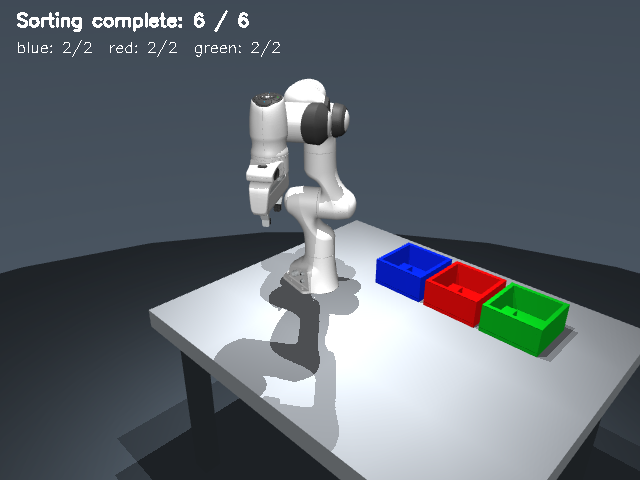
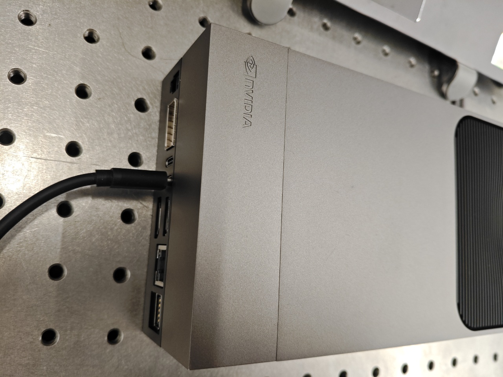
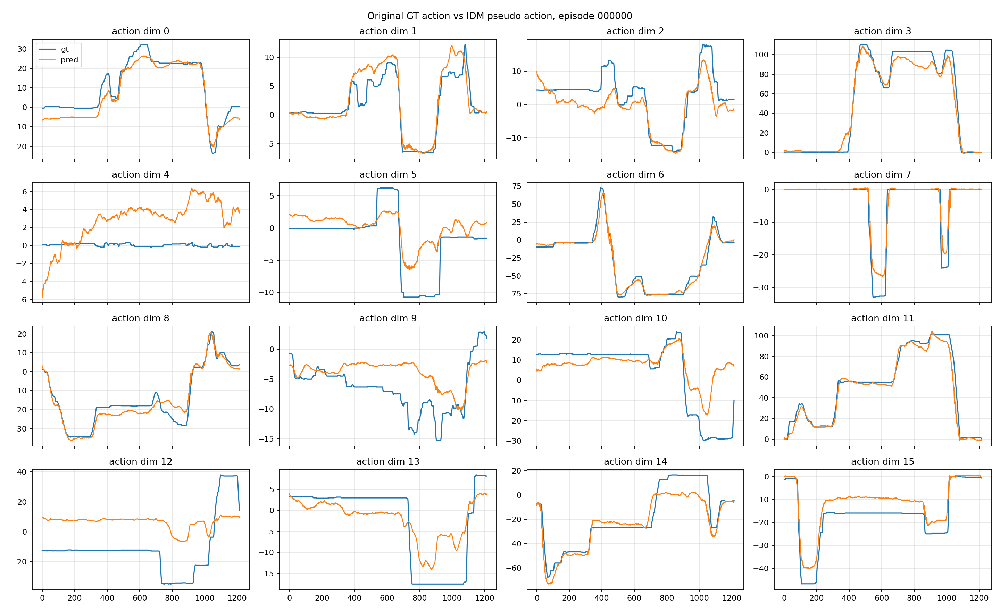

让机械臂学会操作抽屉：π0.5 的真机实践
从示教数据到模型训练，再到 UR5e 真机执行。基于 OpenPI / π0.5、LoRA 与 RTC，探索将 VLA 模型带入真实操作场景。
展开项目细节
通过 LeRobot v3 采集多视角图像、机器人关节及夹爪状态，并进行数据清洗和时间对齐。模型经过 30K step 的 LoRA 微调，使用 RTC 将异步推理与 30Hz 控制解耦。
HELLO, WORLD
你好，我是周天生。这里记录我在具身智能、机器人操作与 VLA 实践中的项目、实验与思考。
THE NOTEBOOK
关于想法，也关于实践。
从示教数据到模型训练，再到 UR5e 真机执行。基于 OpenPI / π0.5、LoRA 与 RTC，探索将 VLA 模型带入真实操作场景。
通过 LeRobot v3 采集多视角图像、机器人关节及夹爪状态，并进行数据清洗和时间对齐。模型经过 30K step 的 LoRA 微调，使用 RTC 将异步推理与 30Hz 控制解耦。
基于 OpenXR 和 ROS2，打通手柄位姿采集、坐标映射、逆运动学与 UR5e 控制，并搭建多模态数据采集流程。
系统结合 MoveIt2 IK、低通滤波、关节限速与急停机制，支持从末端目标位姿到关节指令的完整链路。
从相机、分割和深度信息出发，将三维定位、逆运动学与分阶段轨迹规划串成完整的抓取放置流程。
在 Franka 仿真场景中配置俯视相机，使用 SAM3 分割目标，结合相机参数与深度信息估计三维位置，完成抓取、抬升、移动和放置。

探索 π0.5 在 Jetson AGX Thor 上的端侧部署与机器人推理加速，也参与了双臂操作系统的量化与端侧落地。

围绕 NVIDIA Isaac GR00T-Dreams 和逆动力学模型，探索从多视角数据中提取轨迹、生成数据集与评估预测结果。
